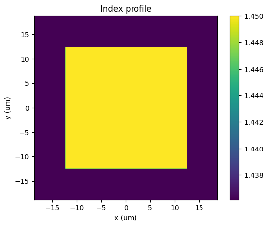
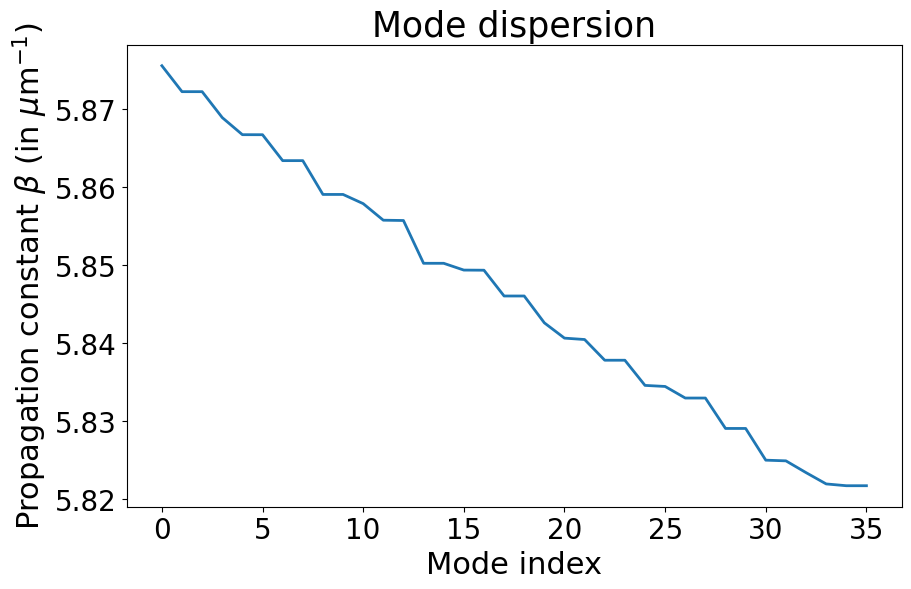
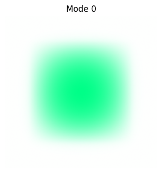
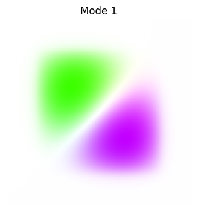
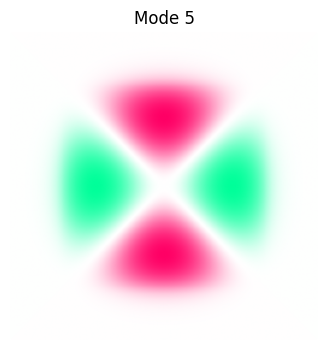
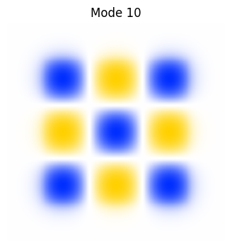
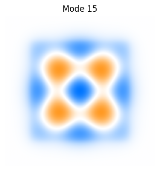
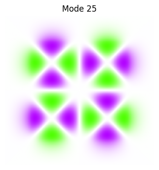
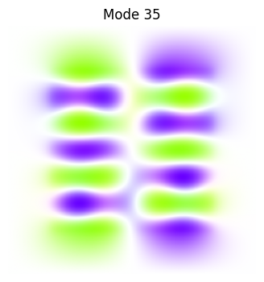

Square fiber using the 2D Eigen-problem solver#
[11]:
import os, sys
sys.path.insert(0,os.path.abspath('../..'))
os.path.abspath('../..')
[11]:
'/home/spopoff/dev/pyMMF'
[12]:
import matplotlib.pyplot as plt
%matplotlib inline
import numpy as np
from pyMMF.functions import colorize
import pyMMF
1. Fiber parameters#
[13]:
NA = .2
n1 = 1.45
n2 = np.sqrt(n1**2 - NA**2)
wl = 1.55 # wavelength in microns
core_size = 25 # core size in microns
areaSize = 1.5*core_size # size of the grid in microns
npoints = 2**8 # number of points in the grid
2. Create index profile#
[14]:
# Create the fiber object
profile = pyMMF.IndexProfile(npoints = npoints, areaSize = areaSize)
[15]:
index_array = n2*np.ones((npoints,npoints))
mask_core = (np.abs(profile.X) < core_size/2) & (np.abs(profile.Y) < core_size/2)
index_array[mask_core] = n1
profile.initFromArray(index_array)
[16]:
profile.plot()

3. Using the radial solver#
3.1 Estimate the number of modes#
[17]:
k0 = 2.0 * np.pi / wl
V = k0 * core_size/2 * NA
Nmodes_estim = np.ceil(V**2 / 2.0 * 4/np.pi).astype(int) //2
# note the last division by 2 is to account for we only consider one polarization
print(f"Estimated number of modes using the V number = {Nmodes_estim}")
Estimated number of modes using the V number = 33
3.2 Solve the modes with the Eigen-problem solver#
[18]:
# Instantiate the solver
solver = pyMMF.propagationModeSolver()
# Set the profile to the solver
solver.setIndexProfile(profile)
# Set the wavelength
solver.setWL(wl)
Nmodes_to_compute = Nmodes_estim+10
solver_options = {
'boundary':'close',
'nmodesMax':Nmodes_estim+10,
'propag_only':True,
}
modes = solver.solve(
solver = 'eig',
curvature = None,
options = solver_options
)
2024-09-10 13:11:56,225 - pyMMF.core [DEBUG ] Debug mode ON.
2024-09-10 13:11:56,225 - pyMMF.solv [INFO ] Solving the spatial eigenvalue problem for mode finding.
2024-09-10 13:11:56,226 - pyMMF.solv [INFO ] Use close boundary condition.
2024-09-10 13:13:04,942 - pyMMF.solv [INFO ] Solver found 36 modes is 68.72 seconds.
2024-09-10 13:13:04,947 - pyMMF.core [DEBUG ] Mode data stored in memory.
[19]:
# Be sure that we have computed enough modes
# (we discarded non-propagating modes)
assert modes.number < Nmodes_to_compute
4. Results#
4.1 Show dispersion#
[20]:
# sort modes by decreasing propagation constant
modes.sort()
[20]:
array([ 0, 5, 2, 1, 4, 3, 8, 6, 12, 11, 7, 10, 9, 17, 15, 13, 14,
21, 18, 16, 19, 20, 26, 25, 22, 23, 27, 24, 32, 30, 28, 29, 31, 33,
35, 34])
[21]:
plt.figure(figsize=(10,6));
plt.plot((np.real(modes.betas)),
linewidth=2.)
plt.xticks(fontsize = 20)
plt.yticks(fontsize = 20)
plt.title(r'Mode dispersion' ,fontsize = 25)
plt.ylabel(r'Propagation constant $\beta$ (in $\mu$m$^{-1}$)', fontsize = 22)
plt.xlabel(r'Mode index', fontsize = 22)
plt.show()

4.2 Display some modes#
[22]:
i_modes = [0,1,5,10,15,25,35]
M0 = modes.getModeMatrix()
for i in i_modes:
Mi = M0[...,i]
mode_profile = Mi.reshape([npoints]*2)
plt.figure(figsize = (4,4))
plt.imshow(colorize(mode_profile,'white'))
plt.axis('off')
plt.title(f'Mode {i}')






